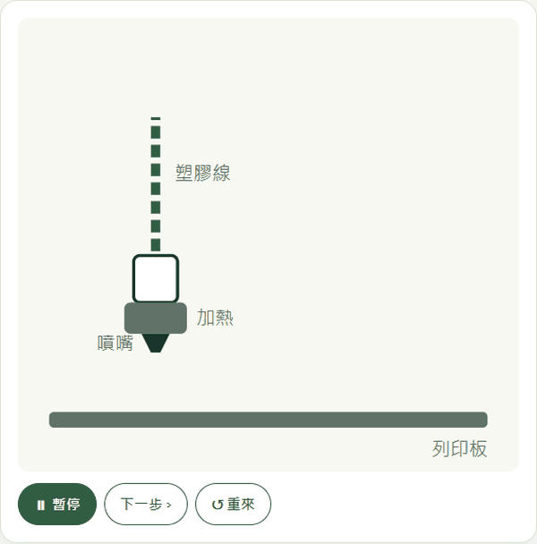
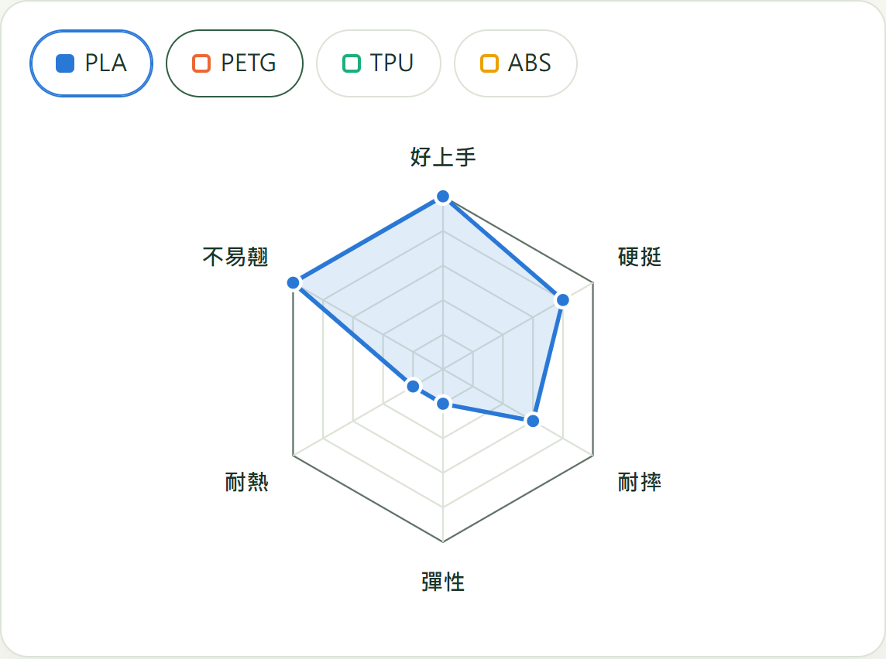
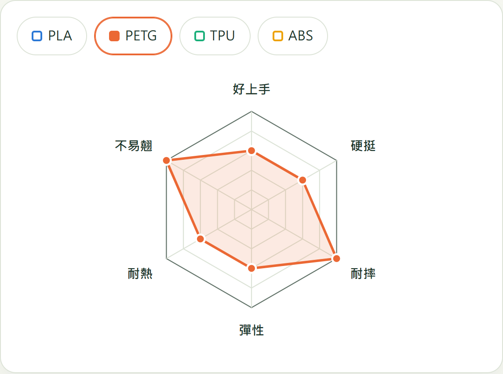
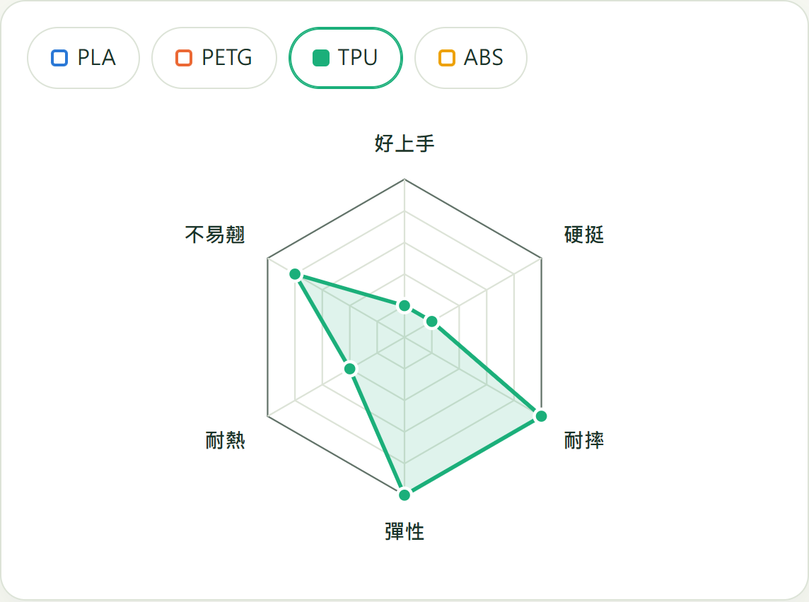
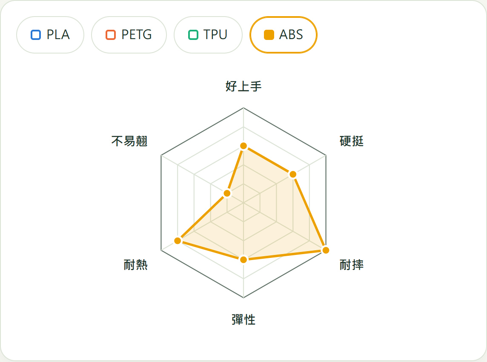
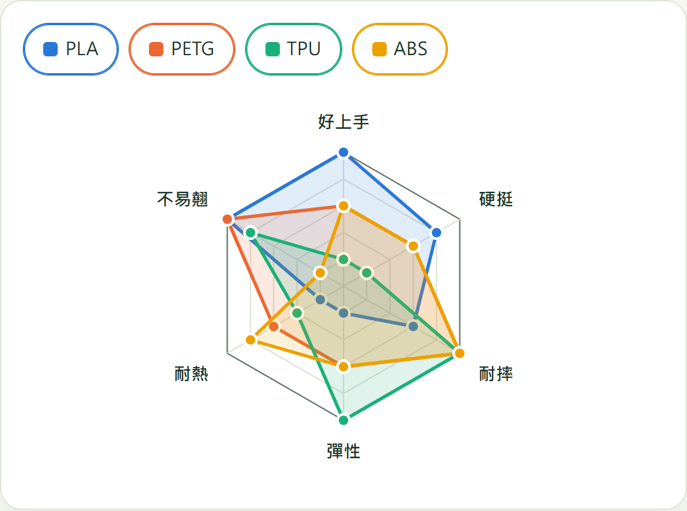
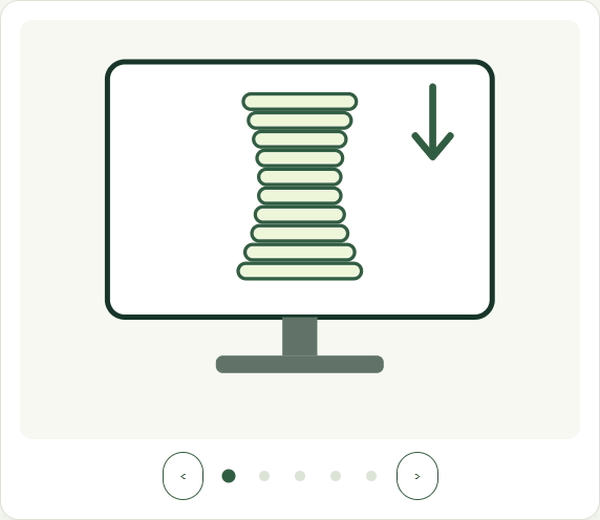
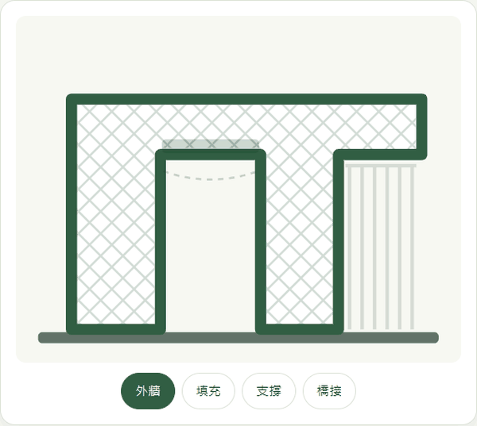
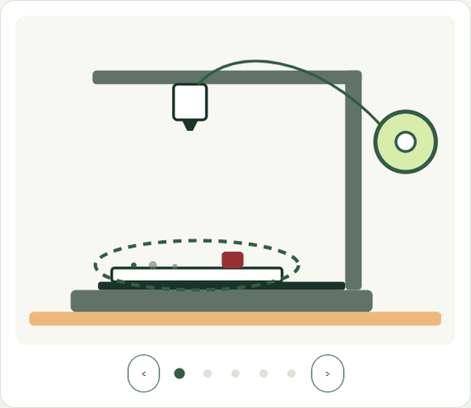

A竹's 3D 列印實驗室・新手入門
第一次用 3D 印表機，你只需要先懂這 5 件事。
怎麼印
選耗材
切片
拆與留
開印前

內容整理自 13 個拓竹官方 Wiki 頁面，每頁都附來源
問題 1 / 5
10 cm ÷ 0.2 mm ＝ 500 層
一層很薄，所以常常要印好幾個小時
Wiki 筆記 01・來源 W1、W6
問題 2 / 5・耗材 1 / 4
摸起來像
硬硬的塑膠玩具
拿來做
公仔、擺飾、模型
特性
最好上手，幾乎不翹；夠硬挺
要注意
怕熱（約 57 °C 就變形）、比較脆

Wiki 筆記 02・來源 W10、W15
問題 2 / 5・耗材 2 / 4
摸起來像
寶特瓶那種硬塑膠
拿來做
收納盒、掛勾、零件
特性
耐摔、耐用，也不太會翹
要注意
容易牽絲，受潮更嚴重

Wiki 筆記 02・來源 W10、W16
問題 2 / 5・耗材 3 / 4
摸起來像
軟軟的橡膠
拿來做
手機殼、止滑墊
特性
柔軟有彈性，耐磨抗衝擊
要注意
最難印：線太軟不好送，要先烘乾

Wiki 筆記 02・來源 W12、W14
問題 2 / 5・耗材 4 / 4
摸起來像
樂高積木
拿來做
要耐熱的零件
特性
耐熱（約 87 °C）、耐摔
要注意
很容易翹，沒外殼的機器別印大件；有刺激性氣味，要通風

Wiki 筆記 02・來源 W2、W10、W15
問題 2 / 5・四種一起比

PLA 最好上手 → 練習、擺飾
PETG 耐摔又不太翹 → 天天用的東西
TPU 最有彈性 → 軟的東西
ABS 最耐熱 → 但最會翹
先想用途，再挑材料。
分數由官方等級換算；官方沒寫的格子是作者經驗。
Wiki 筆記 02・來源 W10、W14、W15
問題 3 / 5
印表機看不懂模型檔，一定要先切片。

Wiki 筆記 03・來源 W1、W2、W5、S0
問題 4 / 5
要拆的只有支撐，其他都是成品的一部分。

Wiki 筆記 04・來源 W5、W6、W7、W8
問題 5 / 5
第一層黏好，後面才會好。

Wiki 筆記 05・來源 W1、W2、W11、W12、W13
複習
第 1 題
A. PLA
B. TPU
C. ABS
B. TPU：有彈性，彎了會彈回來。
第 2 題
A. 直接傳給印表機
B. 先用軟體切片
C. 印成圖片
B. 先切片：印表機只看得懂路徑。
第 3 題
A. 要，一起拆掉
B. 不用，橋面要留著
C. 看心情
B. 留著：只有支撐是鷹架。
點一下顯示答案
幕後 1 / 3
①
定讀者
②
整理筆記
③
查筆記
④
寫重點標來源
⑤
做成頁面
⑥
自動檢查
⑦
新手試讀
⑧
我來確認
我改過的地方寫成規則，下一頁 AI 就會照做
找不到來源
版面錯
看不懂、圖文不合
第一步 ①② 把官方資料整理成 5 篇筆記（知識庫）
第二步 ③～⑧ 一個問題做一頁，每頁跑一輪
橘色＝檢查點・紅線＝不通過就退回
幕後 2 / 3
03 切片・在 ⑦ 新手試讀被抓到
原本：「用軟體切成一層一層」
問題：畫面是細線路徑，文字對不上
改成：「算出噴嘴要走的路徑」
02 PLA・在 ④ 來源檢查被抓到
原本：「耗材放久受潮會變脆」
問題：官方只寫「易碎」，找不到出處
改成：「怕熱、比較脆」
02 雷達圖・在 ④ 來源檢查被抓到
原本：PETG、TPU 每格都有分數
問題：有幾格官方沒給等級
改成：這幾格標成「作者經驗」
01、05・在 ⑦ 新手試讀被抓到
原本：「噴嘴／噴頭」「床台／列印板」混用
問題：同一個東西兩個名字
改成：統一叫「噴頭」「列印板」
最後再對一次：5 篇筆記都對得上 5 個問題・每句重點都找得到來源
幕後 3 / 3
上一頁四個錯有三個出在 ④：多補一句官方沒說的、漏掉經驗值標記、文字跟畫面對不上。
改之前
查詢
→
整理
→
生成
→
最後才檢查
改之後
查詢
→
整理＋標記來源
→
生成
→
自動檢查
→
新手試讀
→
寫回規則
所以我把檢查從最後一步往前移到 ④：每寫一句就標「官方／計算／經驗」。錯了只改一句，不用重畫整張圖。